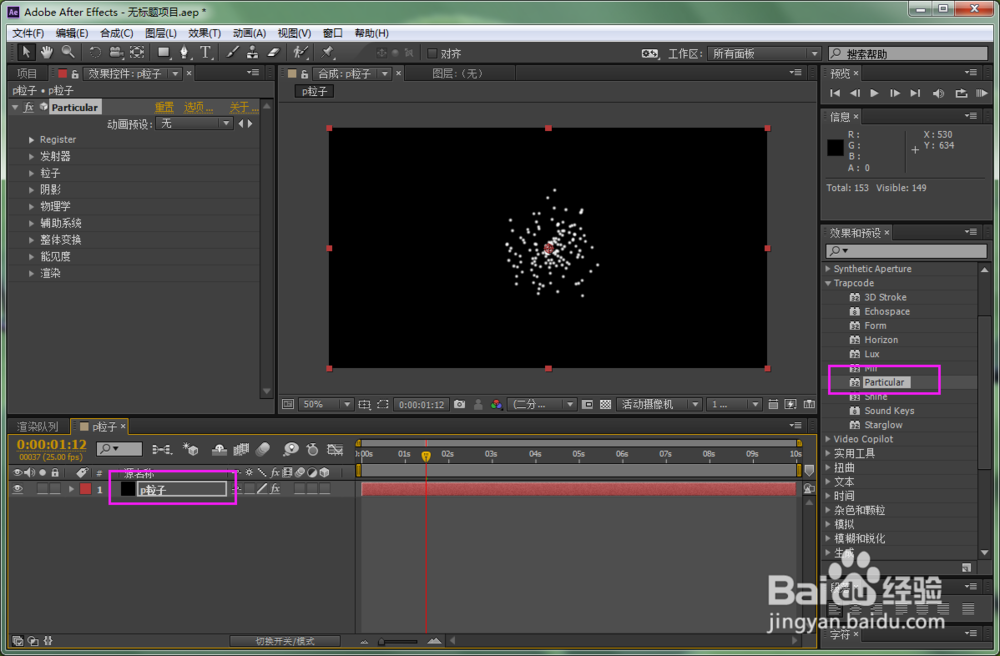
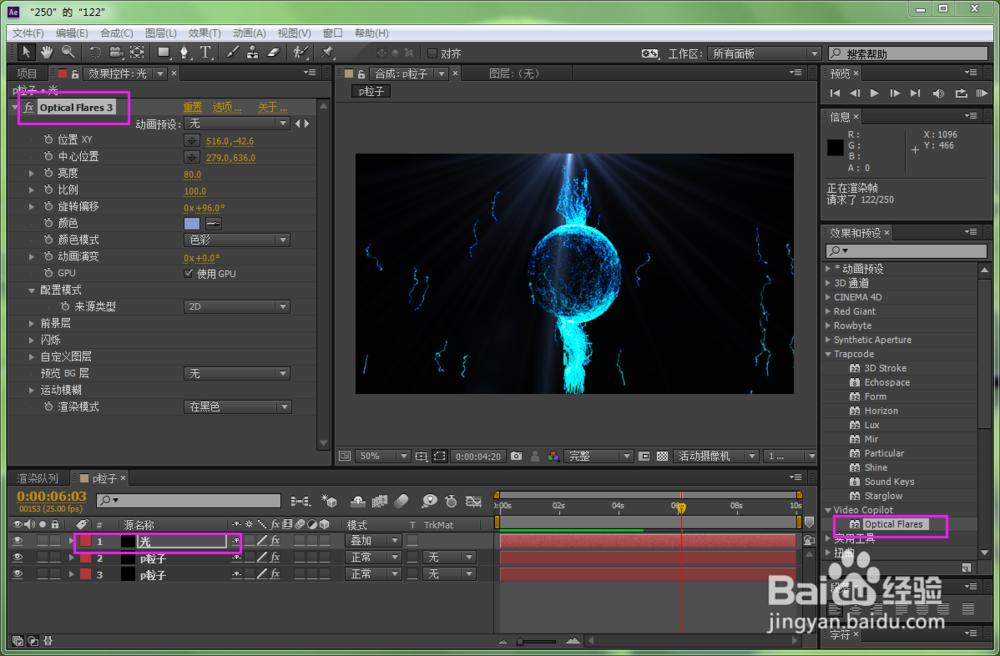

AE粒子特效
Tip1:打开AE，新建合成，时间为10s。新建固态层，命名“p粒子”，加入particular插件到固态层上。

Tip2:接下来调整参数，有个一注擎天的效果。
Tip3:调整粒子参数，大小为1，生命为10s，注意你的合成时间为几秒，这里设为几秒或大于合成时间。生命期颜色可以换成自己想要的效果。粒子可以大一点。
Tip4:接下来调整辅助系统，让粒子有个小尾巴，具体参数如下，根据想要效果可自己调参数。
Tip5:接下来的两步尤为重要了。找到物理学-air-扰乱场，（版本不同，命名也有可能不同）调整一下影响位置，参数越大，变形越明显。
Tip6:接下来在中间做一个球体，让粒子从球体旁边过去，打开物理学-air-球形场进行调整，记住，显现球场一定要打开。
Tip7:这样一个效果就差不多了，很简单，接下来做个背景。
Tip8:可以用光学耀斑光效在装饰一下
